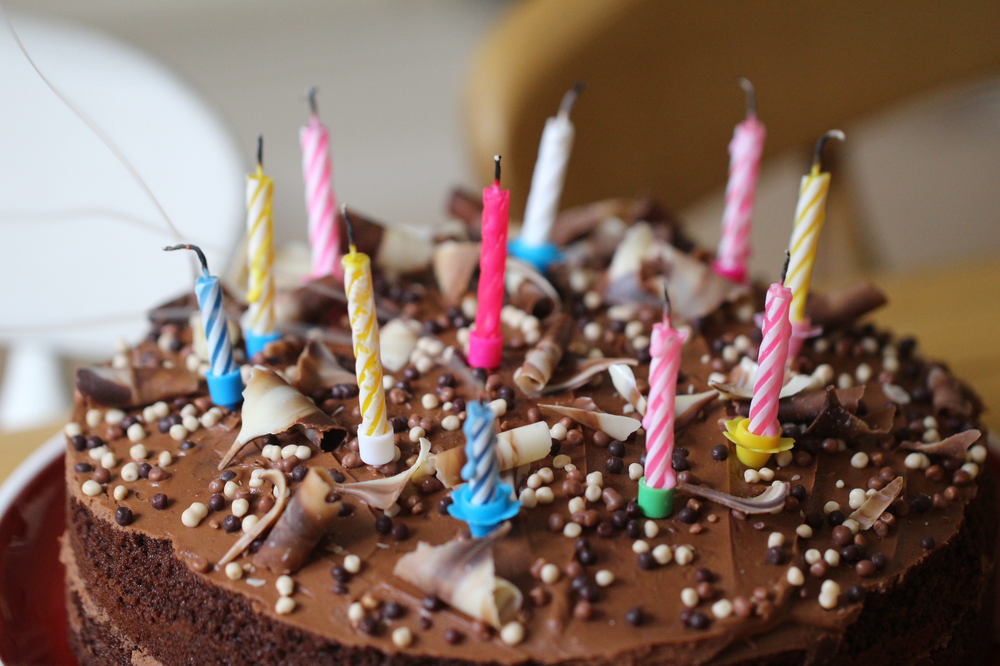

The Best Chocolate Frosting

Wasted Calories Well Worth It
Thanks to the awesome power of heavy cream and butter, this chocolate frosting recipe is positively
shameless in it's approach, because unless you're living your best dairy-free life, why not go
for broke on the toppings? After all, life is too short and dessert is too damn good.
(Alternately, this recipe also holds up great with soy milk in place of the heavy cream)!
Ingredients
- 1/2 cup butter
- 2/3 cup cocoa powder (sifted)
- 3 cups powdered sugar
- 1/3 cup heavy whipping cream
- 1 tsp vanilla extract
Steps
- Melt butter, then stir in cocoa powder.
- Alternate between adding heavy cream and powdered sugar; beat on high until light and fluffy.
- Add additional cream if mixture is too thick, or add more powdered sugar if mixture is too runny.
- Stir in vanilla extract, then party!